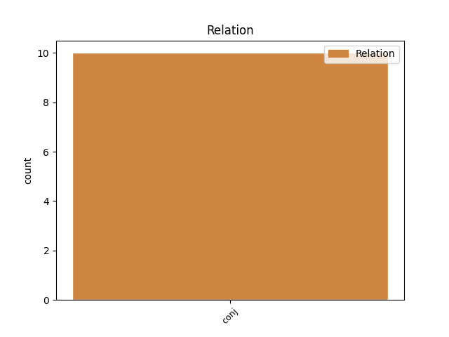
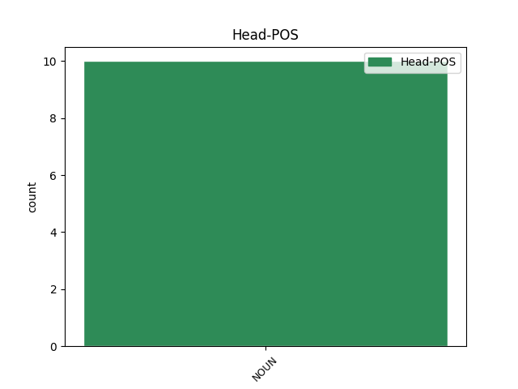
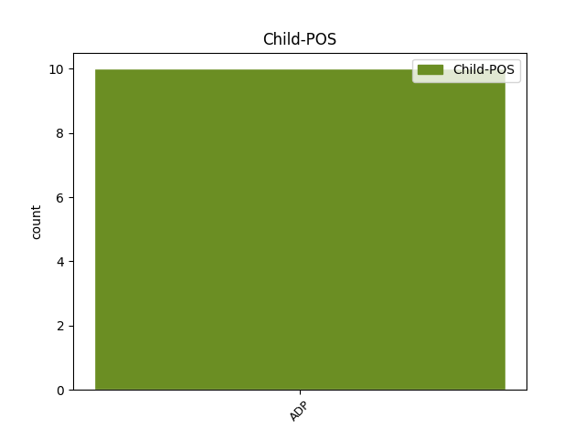

Distribution of features within this leaf



Agreement Rules sorted by frequency.
- When the dependent token is the conjunct(conj) of the head token, and the head token is NOUN and the dependent token is ADP.
1 Platus _ _ _ _ 0 _ _ _
2 teorinės _ _ _ _ 0 _ _ _
3 literatūros _ _ _ _ 0 _ _ _
4 šaltinių _ _ _ _ 0 _ _ _
5 sąrašas _ _ _ _ 0 _ _ _
6 , _ _ _ _ 0 _ _ _
7 apimantis _ _ _ _ 0 _ _ _
8 išsamią _ _ _ _ 0 _ _ _
9 šeimos _ _ _ _ 0 _ _ _
10 žemėlapio _ _ _ _ 0 _ _ _
11 metodo _ _ _ _ 0 _ _ _
12 kūrėjos _ _ _ _ 0 _ _ _
13 Irene'os _ _ _ _ 0 _ _ _
14 Levin _ _ _ _ 0 _ _ _
15 ir _ _ _ _ 0 _ _ _
16 vieno _ _ _ _ 0 _ _ _
17 iš _ _ _ _ 0 _ _ _
18 iškiliausių _ _ _ _ 0 _ _ _
19 šiuolaikinių _ _ _ _ 0 _ _ _
20 šeimos _ _ _ _ 0 _ _ _
21 sociologų _ _ _ _ 0 _ _ _
22 , _ _ _ _ 0 _ _ _
23 diadinės _ _ _ _ 0 _ _ _
24 šeimos _ _ _ _ 0 _ _ _
25 tyrimų _ _ _ _ 0 _ _ _
26 perspektyvos _ _ _ _ 0 _ _ _
27 autoriaus _ _ _ _ 0 _ _ _
28 Jan _ _ _ _ 0 _ _ _
29 Trost _ _ _ _ 0 _ _ _
30 bibliografiją bibliografija NOUN dkt.mot.vns.G. Case=Acc|Gender=Fem|Number=Sing 0 _ _ _
31 , _ _ _ _ 0 _ _ _
32 taip _ _ _ _ 0 _ _ _
33 pat _ _ _ _ 0 _ _ _
34 apie apie ADP prl.G. AdpType=Prep|Case=Acc 30 conj _ _
35 šimtą _ _ _ _ 0 _ _ _
36 Vakarų _ _ _ _ 0 _ _ _
37 sociologų _ _ _ _ 0 _ _ _
38 darbų _ _ _ _ 0 _ _ _
39 yra _ _ _ _ 0 _ _ _
40 ne _ _ _ _ 0 _ _ _
41 tik _ _ _ _ 0 _ _ _
42 jau _ _ _ _ 0 _ _ _
43 pats _ _ _ _ 0 _ _ _
44 savaime _ _ _ _ 0 _ _ _
45 labai _ _ _ _ 0 _ _ _
46 vertingas _ _ _ _ 0 _ _ _
47 visiems _ _ _ _ 0 _ _ _
48 besidomintiems _ _ _ _ 0 _ _ _
49 šeimos _ _ _ _ 0 _ _ _
50 sociologijos _ _ _ _ 0 _ _ _
51 problematika _ _ _ _ 0 _ _ _
52 ; _ _ _ _ 0 _ _ _
53 tai _ _ _ _ 0 _ _ _
54 liudija _ _ _ _ 0 _ _ _
55 apie _ _ _ _ 0 _ _ _
56 didžiulį _ _ _ _ 0 _ _ _
57 ir _ _ _ _ 0 _ _ _
58 kruopštų _ _ _ _ 0 _ _ _
59 knygos _ _ _ _ 0 _ _ _
60 autorių _ _ _ _ 0 _ _ _
61 darbą _ _ _ _ 0 _ _ _
62 , _ _ _ _ 0 _ _ _
63 atliktą _ _ _ _ 0 _ _ _
64 apibendrinant _ _ _ _ 0 _ _ _
65 sukauptą _ _ _ _ 0 _ _ _
66 patirtį _ _ _ _ 0 _ _ _
67 bei _ _ _ _ 0 _ _ _
68 jų _ _ _ _ 0 _ _ _
69 itin _ _ _ _ 0 _ _ _
70 atsakingą _ _ _ _ 0 _ _ _
71 požiūrį _ _ _ _ 0 _ _ _
72 į _ _ _ _ 0 _ _ _
73 savo _ _ _ _ 0 _ _ _
74 misiją _ _ _ _ 0 _ _ _
75 . _ _ _ _ 0 _ _ _
Disagree Examples:
1 Termino _ _ _ _ 0 _ _ _
2 „ _ _ _ _ 0 _ _ _
3 emigrantas _ _ _ _ 0 _ _ _
4 “ _ _ _ _ 0 _ _ _
5 atmetimas _ _ _ _ 0 _ _ _
6 – _ _ _ _ 0 _ _ _
7 pastebėtas _ _ _ _ 0 _ _ _
8 viešajame _ _ _ _ 0 _ _ _
9 diskurse diskursas NOUN dkt.vyr.vns.Vt. Case=Loc|Gender=Masc|Number=Sing 0 _ _ _
10 ir _ _ _ _ 0 _ _ _
11 iš iš ADP prl.K. AdpType=Prep|Case=Gen 9 conj _ _
12 informantų _ _ _ _ 0 _ _ _
13 interviu _ _ _ _ 0 _ _ _
14 – _ _ _ _ 0 _ _ _
15 rodytų _ _ _ _ 0 _ _ _
16 būtinybę _ _ _ _ 0 _ _ _
17 vartoti _ _ _ _ 0 _ _ _
18 sezoninės _ _ _ _ 0 _ _ _
19 migracijos _ _ _ _ 0 _ _ _
20 terminą _ _ _ _ 0 _ _ _
21 . _ _ _ _ 0 _ _ _
1 LIETUVA _ _ _ _ 0 _ _ _
2 EUROPOS _ _ _ _ 0 _ _ _
3 SĄJUNGOS _ _ _ _ 0 _ _ _
4 BIUDŽETO _ _ _ _ 0 _ _ _
5 PERŽIŪROS _ _ _ _ 0 _ _ _
6 PROCESE procesas NOUN dkt.vyr.vns.Vt. Case=Loc|Gender=Masc|Number=Sing 0 _ _ _
7 : _ _ _ _ 0 _ _ _
8 TARP tarp ADP prl.K. AdpType=Prep|Case=Gen 6 conj _ _
9 EUROPINIŲ _ _ _ _ 0 _ _ _
10 IR _ _ _ _ 0 _ _ _
11 NACIONALINIŲ _ _ _ _ 0 _ _ _
12 INTERESŲ _ _ _ _ 0 _ _ _
1 Tačiau _ _ _ _ 0 _ _ _
2 kuriuosi _ _ _ _ 0 _ _ _
3 tik _ _ _ _ 0 _ _ _
4 moteris _ _ _ _ 0 _ _ _
5 , _ _ _ _ 0 _ _ _
6 vyrai _ _ _ _ 0 _ _ _
7 man _ _ _ _ 0 _ _ _
8 įdomūs _ _ _ _ 0 _ _ _
9 vien _ _ _ _ 0 _ _ _
10 kaip _ _ _ _ 0 _ _ _
11 oponentai _ _ _ _ 0 _ _ _
12 ir _ _ _ _ 0 _ _ _
13 visus _ _ _ _ 0 _ _ _
14 juos _ _ _ _ 0 _ _ _
15 įmanoma _ _ _ _ 0 _ _ _
16 užrašyti _ _ _ _ 0 _ _ _
17 tekstu tekstas NOUN dkt.vyr.vns.Įn. Case=Ins|Gender=Masc|Number=Sing 0 _ _ _
18 , _ _ _ _ 0 _ _ _
19 veik _ _ _ _ 0 _ _ _
20 be be ADP prl.K. AdpType=Prep|Case=Gen 17 conj _ _
21 nuostolių _ _ _ _ 0 _ _ _
22 . _ _ _ _ 0 _ _ _
1 Vyras _ _ _ _ 0 _ _ _
2 – _ _ _ _ 0 _ _ _
3 tai _ _ _ _ 0 _ _ _
4 daiktas daiktas NOUN dkt.vyr.vns.V. Case=Nom|Gender=Masc|Number=Sing 0 _ _ _
5 manyje _ _ _ _ 0 _ _ _
6 , _ _ _ _ 0 _ _ _
7 anot anot ADP prl.K. AdpType=Prep|Case=Gen 4 conj _ _
8 Kanto _ _ _ _ 0 _ _ _
9 . _ _ _ _ 0 _ _ _
1 23.1 _ _ _ _ 0 _ _ _
2 . _ _ _ _ 0 _ _ _
3 pirmojo _ _ _ _ 0 _ _ _
4 ketvirčio _ _ _ _ 0 _ _ _
5 ataskaitas ataskaita NOUN dkt.mot.dgs.G. Case=Acc|Gender=Fem|Number=Plur 0 _ _ _
6 ( _ _ _ _ 0 _ _ _
7 už _ _ _ _ 0 _ _ _
8 sausio _ _ _ _ 0 _ _ _
9 1 _ _ _ _ 0 _ _ _
10 d _ _ _ _ 0 _ _ _
11 . _ _ _ _ 0 _ _ _
12 – _ _ _ _ 0 _ _ _
13 kovo _ _ _ _ 0 _ _ _
14 31 _ _ _ _ 0 _ _ _
15 d _ _ _ _ 0 _ _ _
16 . _ _ _ _ 0 _ _ _
17 ) _ _ _ _ 0 _ _ _
18 – _ _ _ _ 0 _ _ _
19 iki iki ADP prl.K. AdpType=Prep|Case=Gen 5 conj _ _
20 balandžio _ _ _ _ 0 _ _ _
21 30 _ _ _ _ 0 _ _ _
22 d _ _ _ _ 0 _ _ _
23 . _ _ _ _ 0 _ _ _
24 ; _ _ _ _ 0 _ _ _